实验思考题
Thinking 1.1
Q： 请查阅并给出前述 objdump 中使用的参数的含义。使用其它体系结构的编译器（如课程平台的 MIPS 交叉编译器）重复上述各步编译过程，观察并在实验报告中提交相应的结果。
A：
objdump命令的常用参数有以下几个
| 参数 | 含义 |
|---|---|
| -d | 将代码段反汇编 反汇编那些应该还有指令机器码的section |
| -D | 与 -d 类似，但反汇编所有section |
| -S | 将代码段反汇编的同时，将反汇编代码和源代码交替显示，源码编译时需要加-g参数，即需要调试信息 |
| -C | 将C++符号名逆向解析 |
| -l | 反汇编代码中插入源代码的文件名和行号 |
| -j | section: 仅反编译所指定的section，可以有多个-j参数来选择多个section |
因此，指导书上的objdump -DS [executable file]这一命令中-DS表示将所有的section反汇编，并将反汇编代码和原码交替显示。
我们使用MIPS交叉编译器重复指导书上的编译过程——
- 我们先新建一个C文件
main.c
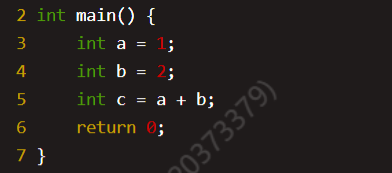
- 然后使用交叉编译器
mips_4KC-gcc将该文件编译成main.o文件,然后用mips_4KC-objdump将其反汇编。
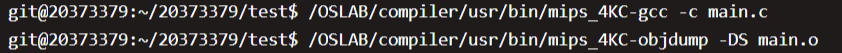
- 反汇编结果如下所示（截取部分）
1
2
3
4
5
6
7
8
9
10
11
12
13
14
15
16
17
18
19
20
21
22
23main.o: file format elf32-tradbigmips
Disassembly of section .text:
00000000 <main>:
0: 27bdffe0 addiu sp,sp,-32
4: afbe0018 sw s8,24(sp)
8: 03a0f021 move s8,sp
c: 24020001 li v0,1
10: afc20010 sw v0,16(s8)
14: 24020002 li v0,2
18: afc2000c sw v0,12(s8)
1c: 8fc30010 lw v1,16(s8)
20: 8fc2000c lw v0,12(s8)
24: 00621021 addu v0,v1,v0
28: afc20008 sw v0,8(s8)
2c: 00001021 move v0,zero
30: 03c0e821 move sp,s8
34: 8fbe0018 lw s8,24(sp)
38: 27bd0020 addiu sp,sp,32
3c: 03e00008 jr ra
40: 00000000 nop
...
Thinking 1.2
Q： 也许你会发现我们的 readelf 程序是不能解析之前生成的内核文件 (内核文件是可执行文件) 的，而我们刚才介绍的工具 readelf 则可以解析，这是为什么呢?(提示：尝试使用 readelf -h，观察不同)
A： 我们使用readelf -h分别查看testELF和vmlinux的文件头
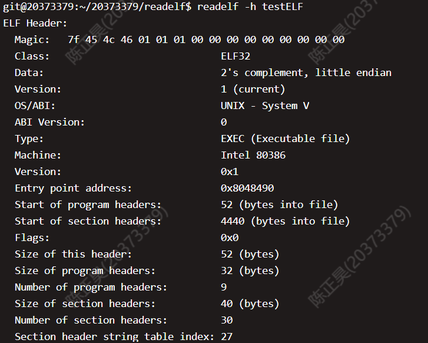
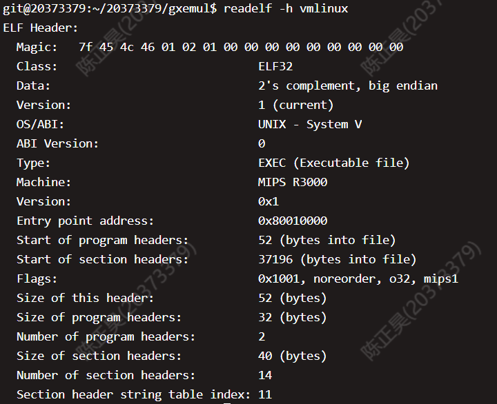
可以发现，
testELF文件是小端储存，而vmlinux是大端储存。因为我们写的readelf不能读取大端存储的数据，所以无法解析vmlinux。
Thinking 1.3
Q： 在理论课上我们了解到， MIPS 体系结构上电时，启动入口地址为0xBFC00000（其实启动入口地址是根据具体型号而定的，由硬件逻辑确定，也有可能不是这个地址，但一定是一个确定的地址），但实验操作系统的内核入口并没有放在上电启动地址，而是按照内存布局图放置。思考为什么这样放置内核还能保证内核入口被正确跳转到？
A： 因为我们在scse0_3.lds中设置好了各个节被加载的位置，即最终的segment地址，同时使用了ENTRY(_start)指定了程序入口（即内核入口），最终保证了内核入口能够被正确跳转。
Thinking 1.4
Q： sg_size 和 bin_size 的区别它的开始加载位置并非页对齐，同时 bin_size 的结束位置（va+i）也并非页对齐，最终整个段加载完毕的 sg_size 末尾的位置也并非页对齐，请思考，为了保证页面不冲突（不重复为同一地址申请多个页，以及页上数据尽可能减少冲突），这样一个程序段应该怎样加载内存空间中。
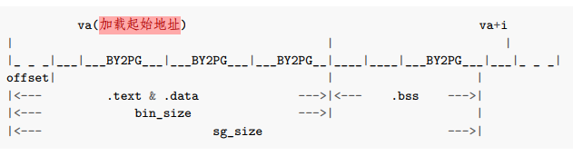
A： 加载前先检查，当程序运行到该页面时，再把该页面加载到相应位置。
Thinking 1.5
Q： 内核入口在什么地方？main函数在什么地方？我们是怎么让内核进入到想要的main函数的呢？又是怎么进行跨文件调用函数的呢？
A： 内核入口的起始地址是_start的地址（因为在linker script中用ENTRY()指定了），main函数是在start.S中跳转的地址。这两个地址可以通过反汇编vmlinux获知。
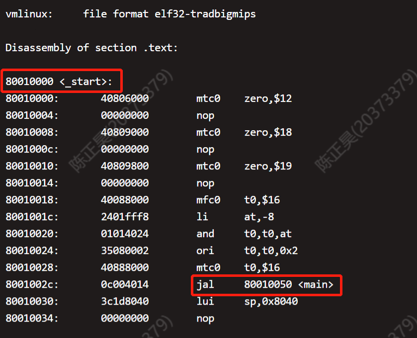
由上图可知，内核入口地址是
0x80010000， main函数地址是0x80010050
本实验中是通过start.S中使用jal指令跳转到main函数的。跨文件调用是通过跳转指令实现的，在调用函数之前还需将数据存入栈中。
Thinking 1.6
Q： 查阅《See MIPS Run Linux》一书相关章节，解释 boot/start.S 中下面几行对 CP0 协处理器寄存器进行读写的意义。具体而言，它们分别读/写了哪些寄存器的哪些特定位，从而达到什么目的？
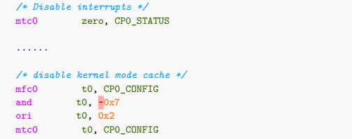
A：
mtc0 zero, CP0_STATUS主要是用来将CPO的12号寄存器（即SR寄存器）设置为0，此时全局中断能位IE的值也是0,全局中断使能失效，CPU不对中断进行响应.
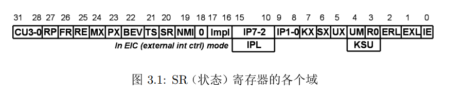
- 下面4行代码主要是对CP0的
16号寄存器（即Config寄存器）进行操作。使用and和ori指令将该寄存器的K0域（0-2位）域设置为0b010，目的是禁止固定的kseg0经过高速缓存。
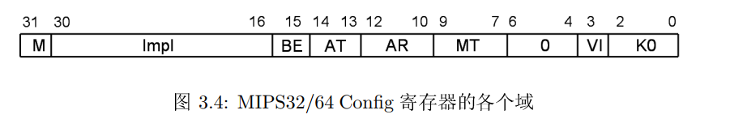
实验难点图示
我认为该实验的难点主要包含以下两个难点——
- 如何使用指针来获取ELF文件中各个
section和segment中的数据 - printf实现逻辑的梳理
ELF的解析
在这一部分中，我们需要熟悉ELF文件的基本结构，尤其是下面这个图——
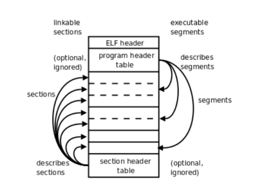
此外，我们需要学会通过ELF手册来获知各个结构体的内部数据，最后通过指针来将数据获取。无论是解析section还是解析segment，我们都需要从文件头中获得section header table或者segment header table的位置。
以segment为例，我们需要先从 文件头结构体（ELF header） 中获得段表（sgement header table）与文件头的偏移e_phoff，然后让文件头地址bineary与之相加就可以得到段表的位置了。此外，我们还能在文件头结构体中获得每个segment的大小（e_phentsize）和segment的总数量（e_phnum）,然后我们就可以通过指针的移动来遍历所有的segment了。
具体的实现方法有以下两种——
1 | Elf32_Phdr *phdr = null; |
printf实现逻辑
我们的printf()函数是通过调用print.c文件中定义的的lp_Print()函数来实现打印的功能——
1 | Pvoid printf(char *fmt, ...) { |
这个lp_Print()函数实现了printf的核心逻辑，虽然函数很长，但是逻辑并不复杂。实际上就是，遍历一遍格式字符串fmt，如果没有遇到\0或者%就直接打印到终端，如果遇到%就按照%[flags][width][.precision][length]specifier的形式进行输出格式的解析，并以这种输出格式打印从可变参数列表获得的参数；如果遇到\n就结束整个打印过程。具体流程如下图所示——
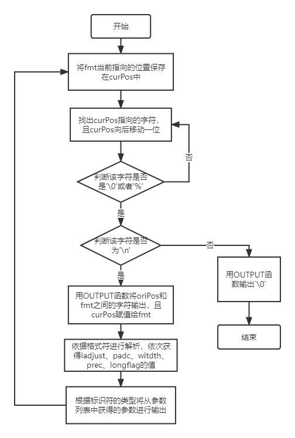
体会与感想
Lab1主要让我们学习操作系统启动的基本流程、掌握ELF文件的结构和功能，以及最终完成一个printf函数的书写。本次Lab花费时间大约为10个小时，大多数时间都花在阅读源代码和思考源代码的逻辑上。由于完成每个功能依赖的代码文件不止一个，而且在vim中阅读代码终归不如在vscode等图形化编辑器上方便，因此给代码阅读和理解带来了不小的麻烦。此外，课程组提供的源代码中大量使用了“指针”，也给代码的理解带来了一定的困难。
但是，当我真正的读懂所给代码的逻辑并完成练习，尤其是当我看到printf函数可以正常运行时，那种成就感和快乐感是无法用言语来形容的。从一开始“不识庐山真面目”，到最终“柳暗花明又一村”，这大概就是操作系统的魅力吧！
If you like this blog or find it useful for you, you are welcome to comment on it. You are also welcome to share this blog, so that more people can participate in it. If the images used in the blog infringe your copyright, please contact the author to delete them. Thank you !